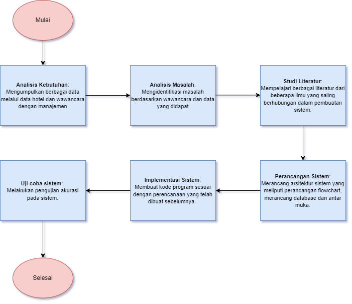
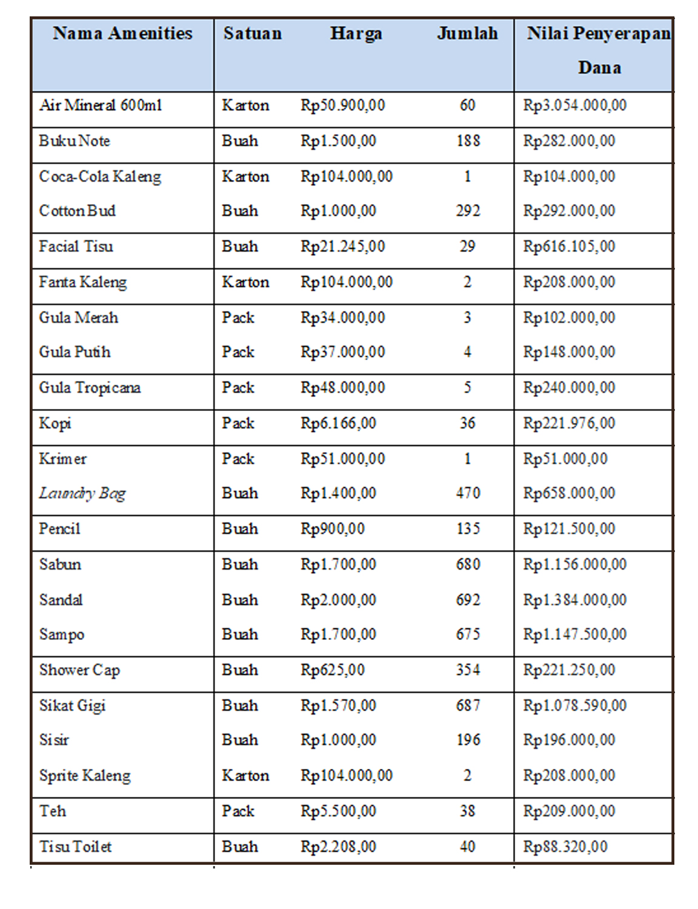
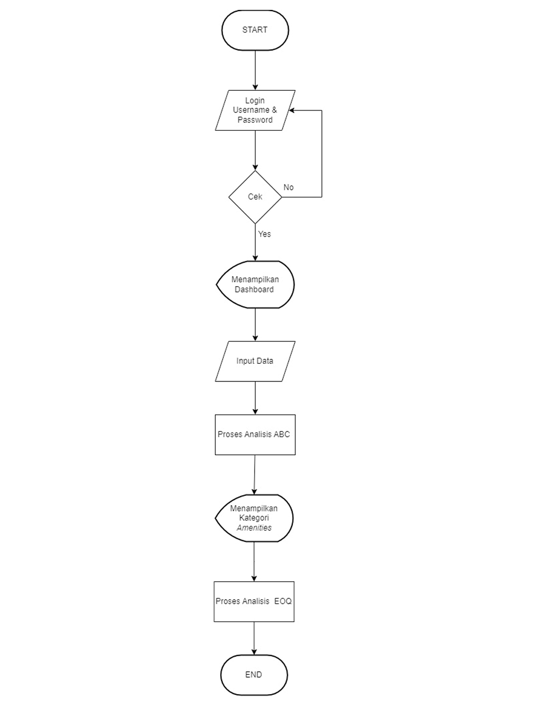
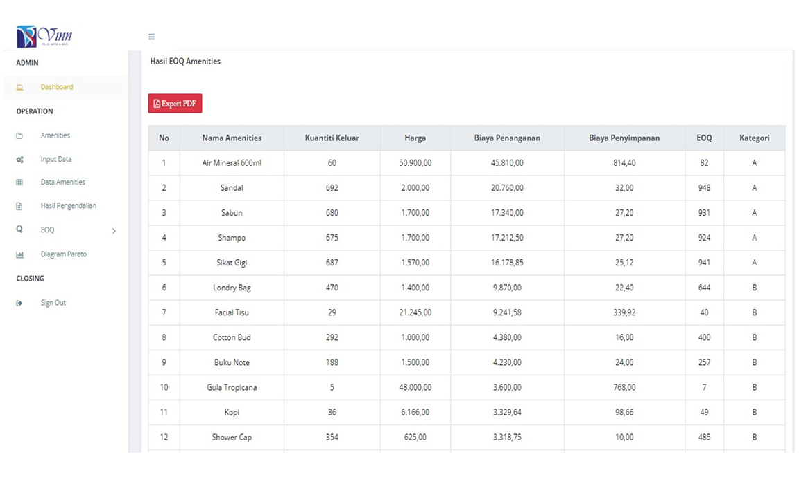
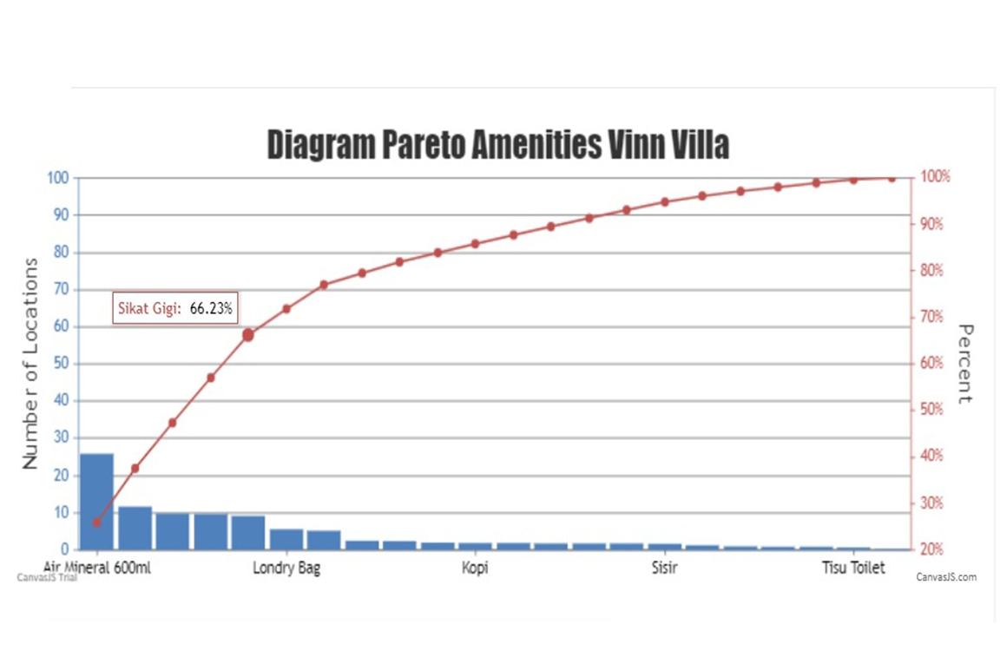

Analisis Pengendalian Persedian Amenities Kamar Hotel menggunakan Analisis ABC dan Economic Order Quantity Berbasis Web Pada Vinn Villa & Resto Jepara
Muchammad Ramadhan1; Imam Suharjo2
1,2 Universitas Mercu Buana Yogyakarta
Abstrak
Penelitian ini berusaha untuk mengurai masalah dalam pengendalian amenities Hotel Vinn Villa & Resto Jepara dengan menggunakan metode analisis ABC dan Economic Order Quantity (EOQ). Setelah data amenities diperoleh lalu dilakukan perencanaan pembuatan sistem pengendalian amenities dengan metode analisis ABC dan Economic Order Quantity (EOQ) yang diharapkan sistem dapat bekerja secara maksimal dan menjadi jalan keluar dari masalah yang ada. Hasil kesimpulan penelitian ini menunjukan bahwa amenities dengan kategori A terdiri dari 5 jenis item amenities. Kategori B terdiri dari 8 jenis item. Kategori C terdiri dari 9 jenis item amenities. Berdasarkan dari amenities yang telah dikategorikan menjadi tiga kategori kemudian masuk ketahap proses dari Economic Order Quantity (EOQ) untuk perencanaan stok optimal, bahwa kategori A memiliki jumlah stok optimal sebesar 3.826, kategori B memiliki jumlah stok optimal sebesar 1.934 dan kategori C memiliki jumlah stok optimal sebesar 525.
Kata kunci: Villa, Hotel, Amenities, Analisis ABC, Economic Order Quantity ,Pengendalian Persediaan Barang, Sistem Pendukung Keputusan
Kontak
Muchammad Ramadhan
muchammadramadhan12@gamil.com
Imam Suharjo
imam@mercubuana-yogya.ac.id
Latar Belakang
Hotel adalah suatu jasa penginapan yang sekarang sudah banyak tumbuh di berbagai tempat dari perkotaan hingga pedesaan, hotel membantu seseorang yang bepergian jauh atau memiliki urusan di luar rumah untuk dapat beristirahat atau singgah dengan nyaman saat berada di luar rumah. Hotel memiliki sebuah kamar dengan berbagai macam fasilitas dengan berbagai macam jenis yang berbeda di setiap masing-masing hotel untuk menunjang kenyamanan dari tamu yang menginap disana agar seperti menginap dirumah atau kamar sendiri. Fasilitas dan barang (amenities) ini memiliki jumlah yang banyak dan memiliki jenis yang bermacam-macam sesuai dengan tingkat kepentingannya di dalam suatu kamar hotel Banyaknya jenis barang perlengkapan kamar hotel (amenities) ini juga memakan biaya dalam penanganannya dan perlu pengendalian barang secara intensif agar tidak terjadi kerugian dalam proses penyerapan dana dan pengadaan stok yang dilakukan hotel untuk penyediaan barang atau perlengkapan kamar hotel yang ada. Vinn Villa & Resto Jepara merupakan Hotel yang berjenis Resort Hotel yang letaknya berada di tepi Pantai Teluk Awur Jepara, Vinn Villa & Resto Jepara belum menggunakan analisis ABC dan Economic Order Quantity (EOQ) untuk kebijakan pengendalian persediaan amenities. Dengan adanya sistem analisis pengendalian persediaan barang amenities yang lebih optimal menggunakan analisis ABC dan Economic Order Quantity (EOQ), diharap pengendalian persediaan amenities dapat dikendalikan secara optimal dan dikategorikan sehingga penggunaan anggaran dapat dilakukan secara efisien.
Rumusan Masalah
1.Bagaimana cara penerapan analisis ABC dan Economic Order Quantity (EOQ) untuk analisis pengendalian barang pada Vinn Villa & Resto Jepara?
2.Bagaimana cara implementasi analisis ABC dan Economic Order Quantity (EOQ) menjadi sebuah sistem berbasis web?
3.Bagaimana hasil unjuk kerja dari sistem analisis pengendalian amenities dengan menggunakan analisis ABC dan Economic Order Quantity (EOQ)?
Tujuan Penelitian
1.Untuk menjelaskan pengelompokan amenities di Vinn Villa & Resto Jepara menggunakan analisis ABC.
2.Untuk menjelaskan cara penerapan analisis ABC dan Economic Order Quantity (EOQ) menjadi sistem analisis pengendalian amenities yang berbasis web pada Vinn Villa & Resto Jepara.
3.Untuk mengetahui unjuk kerja dari sistem analisis pengendalian amenities pada Vinn Villa & Resto Jepara.
manfaat-penelitian
1. Bagi Peneliti
Peneliti mendapatkan pengalaman dan wawasan tentang lingkungan kerja serta dapat menerapkan teori-teori yang diperoleh di perkuliahan.
2. Bagi Hotel
Hasil dari penelitian ini diharapkan dapat menjadi masukan dan membantu proses pemecahan masalah yang dialami hotel dalam pengendalian amenities.
3. Bagi Pembaca
Kajian ini diharapkan dapat menambah pemahaman dan pengetahuan pembaca tentang analisis ABC dan dapat menjadi referensi untuk memecahkan kasus yang sama.
Metode
Secara garis besar proses jalannya penelitian ini dibagi menjadi beberapa tahapan, seperti pada Gambar 1.
Gambar 1. Jalan Penelitian
Analisis
Berdasarkan data pengeluaran amenities dari stok gudang amenities yang diperoleh melalui wawancara secara langsung dengan pihak manajemen Vinn Villa & Resto Jepara dapat dilihat pada Tabel 1.
Tabel 1. Data Amenities periode 3 April sampai 3 Mei 2023

Desain
Flowchart sistem merupakan tahapan atau proses yang sedang berlangsung di dalam suatu sistem secara menyeluruh, desain dari flowchart sistem dapat dilihat pada Gambar 2.
Gambar 2. Flowchart Sistem
Hasil
Berikut adalah hasil dari pengolahan data amenities dengan menggunakan sistem analisis abc dan Economic Order Quantity berbasis web, dapat dilihat pada Gambar 3.
Gambar 3. Hasil analisis ABC dan Economic Order Quantity berbasis web
Diagram Pareto
Berikut adalah hasil dari diagram pareto analisis ABC pada sistem berbasis web, dapat dilihat pada Gambar 4.
Gambar 4. Diagram Pareto Analisis ABC
kesimpulan
1.Sistem analisis pengendalian amenities dengan menggunakan analisis ABC dan Economic Order Quantity (EOQ) berbasis web dengan 22 item amenities dan tiga jenis kategori telah berhasil dibuat.
2.Hasil dari pengkategorian berdasarkan persentase kumulatif pada amenities Hotel Vinn Villa & Resto Jepara antara lain, kategori A tersusun atas lima jenis item amenities. Kategori B tersusun atas delapan jenis item amenities. Kategori C tersusun atas sembilan jenis item amenities.
3.Amenities yang telah dikategorikan menjadi tiga kategori kemudian masuk ketahap proses dari Economic Order Quantity (EOQ) untuk perencanaan stok optimal, bahwa kategori A memiliki jumlah stok optimal sebesar 3.826, kategori B memiliki jumlah stok optimal sebesar 1.934 dan kategori C memiliki jumlah stok optimal sebesar 525.
Refrensi
- Ahmad, F. (2020). Pengertian Amenities Hotel. Diambil Kembali Dari Ames Boston: Https://Www.Amesbostonho tel.Com/Pengertian-Amenities-Hotel/
- Andriyan, W., Septiawan, S., & Aulya, A. (2020). Peran cangan Website Sebagai media Informasi Dan Pening katan Citra Pada Smk Dewi Sartika Tangerang . Jurnal Teknologi Terpadu, 79-88.
- Bahari, S. G., & Fauji, D. A. (2021). Metode ABC Dalam Pengendalian Persediaan Produk. Management Busi ness Journal, 814-821.
- Fikram, M. N. (2019). Optimasi Persediaan Bahan Baku Dengan Analisis ABC Dan Periodic Review PT XYZ. Jurnal Optimasi Teknik Industri, 21-25.
- Guslan, D., & Saputra, I. (2020). Analisis Pengendalian Inventori Dengan Klasifikasi ABC Dan EOQ Pada PT Nissan Motor Distributor Indonesia. Jurnal Logistik
- Tiwow, C. A., & Pondaag, J. J. (2023). Analisis Manaje men Pengen dalian Persediaan Bahan Baku Daging Babi Dengan Metode Economic Order Quantity (EOQ) Pada RM. Coto Boke Ungke Polo Manado. Jurnal LPPM Bidang Ekososbudkum, 1427-1436.
- Novarika, W., Parinduri, L., & Darvito, D. (2021). Analisa Persediaan Produk Furniture Dan Aksesorise Dengan Menggunakan Metode Abc Di Pt. Home Center. Jurnal UISU, 212-218.
- Pertiwi, L., Pradana, E. S., & Hendriani, R. (2022). Analsis Abc Dalam Perencanaan Obat Antibiotik Di Apotek. Jurnal Unpad, 1-6.
- Prasetyo, B., & Trisyanti, U. (2018). Revolusi Industri 4.0 Dan Tantangan Perubahan Sosial. Jurnal Prosiding SEMATEKSOS 3, 22-27.
- Pratiwi, D. N., & Saifudin. (2021). Penerapan Metode Analisis Abc Dalam Pengendalian Persedian Bahan Baku Pada Pt. Dyriana(Cabang Gatot Subroto). Jurnal Ilmiah Bidang Ilmu Ekonomi, 60-75.
- Purba, N., Yahya, M., & Nurbaiti, M. K. (2021). Revolusi Industri 4.0 :Peran Teknologi Dalam Eksistensi Pengua saan Bisnis Dan Implementasinya . Jurnal Mercubuana Yogyakarta, 91-98.
- Reihansyah, B., & Yuki Firmanto, S. M. (2019). Pengembangan Sistem Informasi Rumah Sakit Badan Layanan Umum Daerah (Blud) :System Development Life Cycle (Sdlc) Teknik Waterfall (Studi Kasus Rumah Sakit Umum Daerah X). Jurnal Ilmiah Mahasiswa FEB Universitas Brawijaya, 1-18.
- Rusmawati. (2019). Pengaruh Harga Kamar Dan Fasilitas Hotel Terhadap Kepuasan Konsumen Di Shangrila Hotel Surabaya. Jurnal Ekonomi Unisla, 889-896.
- Salasa, M. Y., & Taufiq Ismail SE., S. M. (2018). Analisis Pengaruh Attraction, Accessibility, Amenities, Dan Ancillary Terhadap Kepuasan Wisatawan Pantai Tiga Warna Malang. Jurnal Ilmiah Mahasiswa FEB Universitas Brawijaya , 1-8.
- Silitonga, P. D., & Purba, D. E. (2021). Implementasi System Development Life Cycle Pada Rancang Bangun Sistem Pendaftaran Pasien Berbasis Web. Jurnal Sistem Informasi Kaputama, 196-203.
- Umami, D. M., Mu’tamar, M. F., & Rakhmawati, R. (2018). Analisis Efisiensi Biaya Persediaan Menggunakan Metode Eoq. Jurnal Agroteknologi, 64 - 70.
- Srinivasan, A. (2008). Managing A Modern Hospital. New Delhi: Response Books.